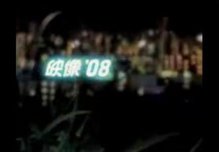

この動画はGoogle ビデオにアップされていましたが、2011年4月29日に削除されますので、
このサイトで見られるようにしました。Real Player がインストールされたパソコンでご覧になれます。
下記の画像をクリックして下さい。

なぜ警告を続けるのか〜京大原子炉実験所・”異端”の研究者たち〜
大阪府熊取町にある京都大学原子炉実験所。 ここに脱原発の立場から活動を続けている”異端”の研究者たちがいる。 原子力はわが国の総発電電力量の３割を供給するまでになったが、反面、去年の中越沖地震で柏崎刈羽原発が「想定」を上回る激しい揺れで被災するなど、技術的な課題を完全には克服出来ていない。 番組では、国策である原子力推進に異を唱え、原子力の抱えるリスクについて長年、警告を発し続けてきた彼らの姿を追う。 その言葉はエネルギーの大量消費を享受する私たち国民一人ひとりへの問いかけでもある。（毎日放送製作、2008年、50分）